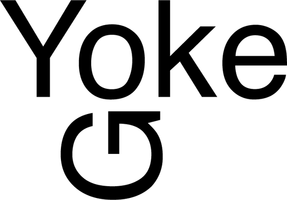
PRODUCT DESIGN · SIM RACINGGoYoke
Un simulatore di guida pieghevole, trasportabile ed economico, progettato per portare il sim racing in qualsiasi ambiente e su qualsiasi superficie.
Progetto sviluppato durante il semestre Erasmus alla Rotterdam University of Applied Sciences (RUAS).

- Corso
- Influential Design and Creative Engineering
- Università
- RUAS · Rotterdam
- Ambito
- Sim racing
- Dove / quando
- Rotterdam · semestre Erasmus
Il sim racing, ovunque.
Ho sviluppato GoYoke durante il mio semestre Erasmus a Rotterdam, nei Paesi Bassi, frequentando il corso “Influential Design and Creative Engineering” presso la Rotterdam University of Applied Sciences (RUAS).
Il sim racing sta avvicinando l’esperienza di guida sportiva a un pubblico sempre più ampio, ma resta un’attività costosa e tecnica. Un simulatore tradizionale richiede più componenti, occupa molto spazio ed è difficile da trasportare.
Un simulatore nello zaino
GoYoke nasce per essere accessibile e utilizzabile in qualsiasi ambiente e con qualsiasi gioco. Funziona attraverso un joystick Bluetooth, quindi può essere collegato praticamente a qualsiasi dispositivo e simulatore di guida; si piega per entrare in uno zaino e si usa su ogni superficie, anche sul divano.
Guarda il video di GoYoke (si apre in una nuova scheda)Dall’esigenza a un simulatore portatile.
Analisi del problema, progettazione della soluzione e verifica del prototipo.
- 01
Rendere il sim racing accessibile
Individuare i limiti delle configurazioni tradizionali: costo, complessità tecnica, ingombro e scarsa trasportabilità.
- 02
Progettare una soluzione pieghevole
Integrare un joystick Bluetooth in un sistema compatto, compatibile con dispositivi e simulatori diversi e pieghevole in uno zaino.
- 03
Prototipare e testare
Il prototipo fisico è stato provato con più utenti, osservando impugnatura, postura, stabilità, regolazioni e risposta del sistema durante la guida.
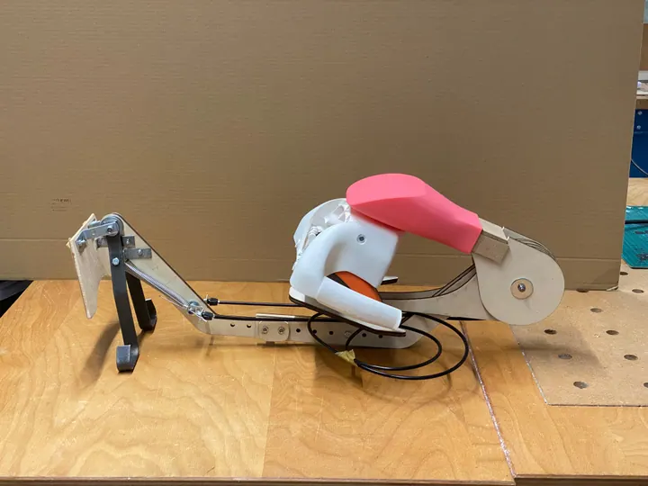
Il sistema prende forma.
Viste d’insieme e dettagli raccontano l’integrazione del controller, il meccanismo e la posizione d’uso.
Seleziona un’immagine per ingrandirla.

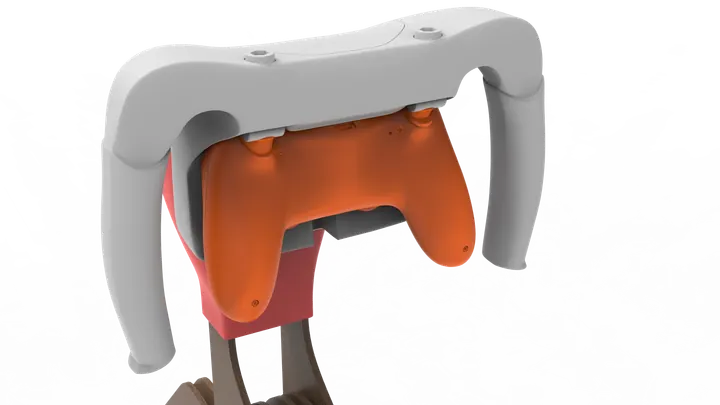

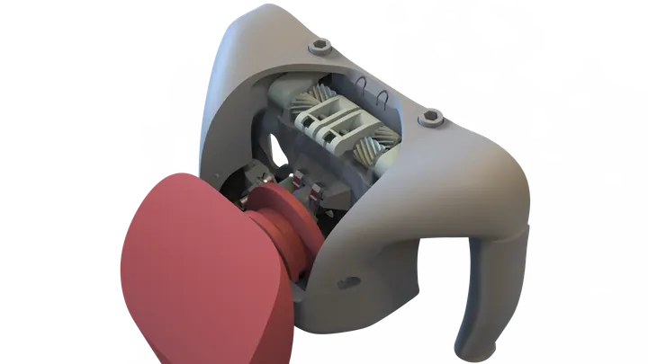

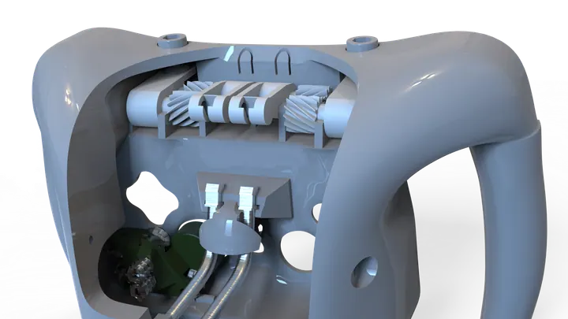

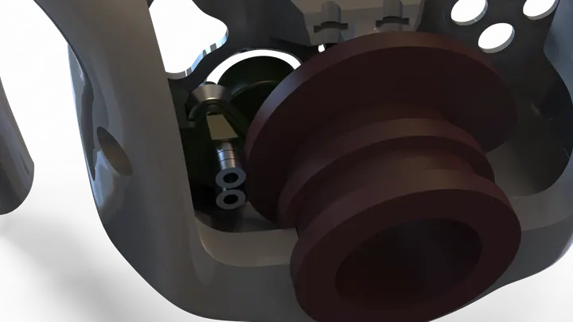

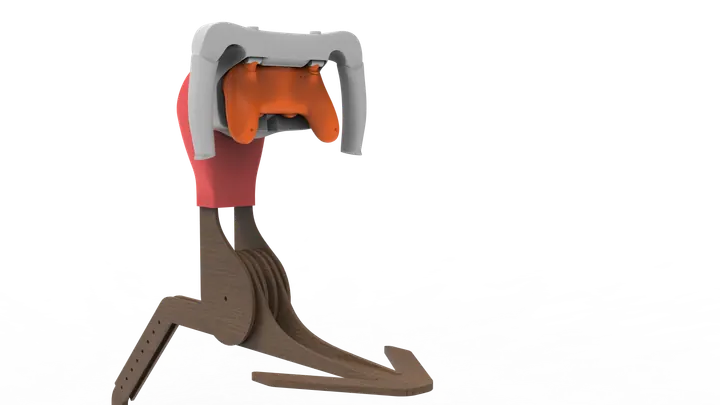
Dal modello alle prove.
Il prototipo fisico rende visibili meccanica, regolazioni e integrazione del controller; le prove mostrano il sistema durante l’uso.
Il prototipo
Struttura in legno, componenti stampati in 3D, molle e collegamenti meccanici compongono il modello funzionante.

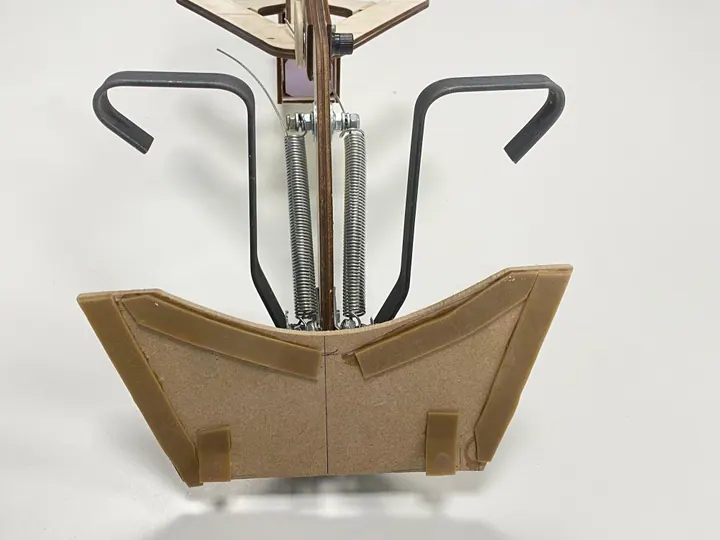

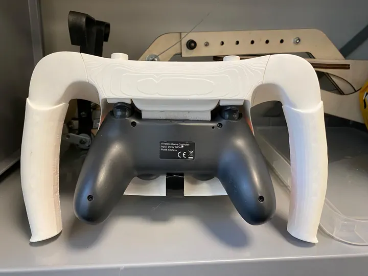

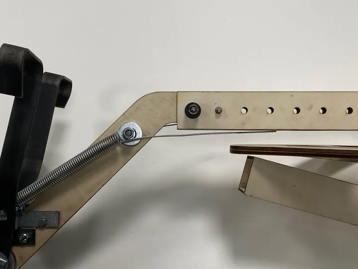

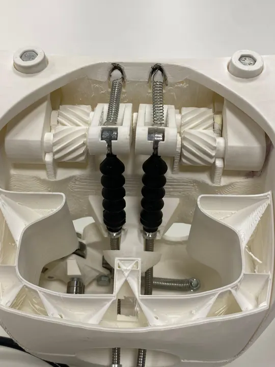
Le prove d’uso
Il prototipo collegato a un gioco di guida permette di osservare presa, postura e funzionamento con utenti diversi.

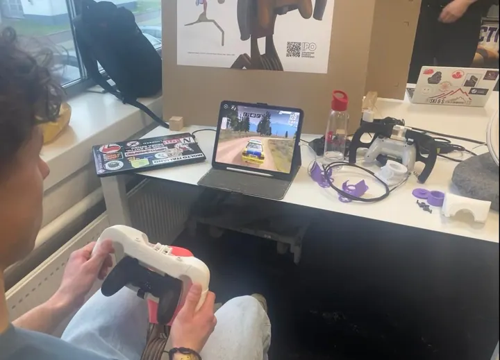

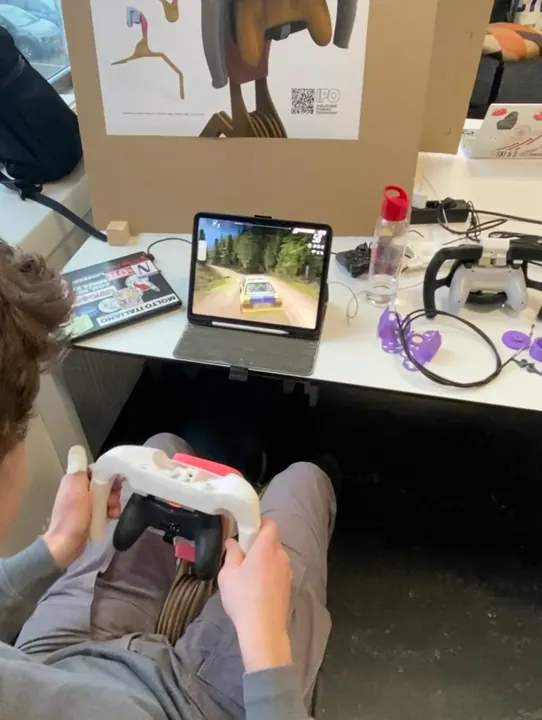

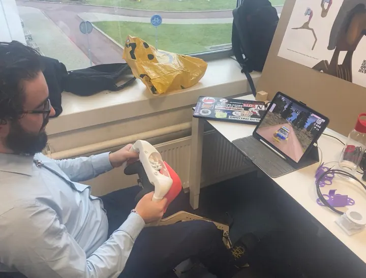
Hai un’idea da sviluppare?
Ogni progetto inizia da una conversazione.